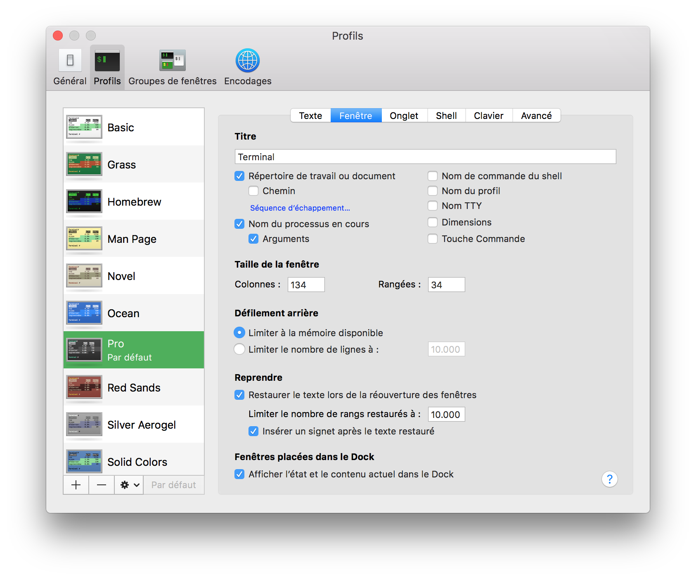

Log in as an Administrator
Launch Terminal and type:
sudo visudoNavigate trough the file until:
##
# User specification
##
# root and users in group wheel can run anything on any machine as any user
root ALL = (ALL) ALL
%admin ALL = (ALL) ALLEnter in INSERT mode and add the following line:
alexandre ALL = (ALL) ALLNow exit the INSERT mode and type this to exit vim:
:wqHit the : key (colon) and then type “wq” followed by the Return key to save changes and exit vi
- Launch Terminal, go to Preferences and choose the Pro profile at launch (General tab).
- In Profiles, choose Pro.
- Then, go to the sprocket at the bottom and import the Pro.terminal file.
Now, you should have this:

See the appropriate page.
You can simply use the bash files from my GitHub.
cp Desktop/bash_path.sh .bash_path
cp Desktop/bash_aliases.sh .bash_aliases
cp Desktop/bash_prompt.sh .bash_prompt
cp Desktop/bash_profile.sh .bash_profileWarning Some things aren't installed yet.
If you choose to use these files at this time, you'll have install the git tools.
Set the execution right to the script from GitHub.
chmod u+x post_install.shREMARQUE: The user has to be Administrator !
Launch the post_install.sh srcipt.
/Users/alexandre/Desktop/post_install.shYou can now make it Standard again.
Once Dropbox set, you have to install Mackup:
brew install mackupNow, you just have to launch it and back up your files:
mackup restoreTo copy back any synced config file to its original place, you just have to type:
mackup uninstall